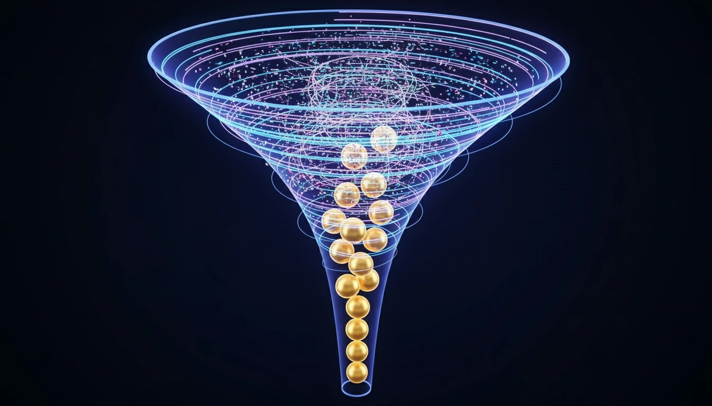

What is a Sales Funnel? Mapping the Customer Journey to Revenue (2025)

Imagine pouring water into a funnel. You pour a lot in at the top, but only a small, steady stream comes out the bottom. That is exactly how sales work. You attract a lot of potential customers, but only a fraction of them will actually buy from you.
A Sales Funnel is the visual representation of the journey your customers take from the moment they first hear about your brand (Awareness) to the moment they make a purchase (Action). Understanding this journey is the key to fixing your "leaky bucket" and maximizing your revenue.
The 4 Stages of the Sales Funnel (AIDA)
The classic model for understanding the funnel is AIDA. Here is how it breaks down:
1. Awareness (Top of Funnel - TOFU)
The customer realizes they have a problem and starts looking for a solution. They might find you through a Google search, a social media post, or an ad.
Goal: Capture their attention.
2. Interest (Middle of Funnel - MOFU)
The customer is now researching options. They are reading reviews, comparing features, and looking for the best fit. They might sign up for your newsletter or download a guide.
Goal: Build trust and educate them.
3. Desire (Middle/Bottom of Funnel)
The customer has narrowed down their options and likes your product, but they need that final push. They are looking for pricing, case studies, or a demo.
Goal: Show them why you are the best choice.
4. Action (Bottom of Funnel - BOFU)
The moment of truth. The customer pulls out their credit card and buys. But the journey doesn't end here—retention is the new growth.
Goal: Make the purchase process seamless.
A Real-World Example: Buying a Coffee Maker
Let's see this in action:
- Awareness: "My coffee tastes terrible. I need a new machine." (Searches Google for "best coffee makers 2025").
- Interest: Reads a blog post comparing French Press vs. Drip vs. Espresso. Decides on an Espresso machine.
- Desire: Finds your brand's machine. Reads reviews, watches a YouTube video demonstration, and sees a 10% off coupon.
- Action: Clicks "Add to Cart" and checks out.
How to Optimize Your Funnel
Most funnels are leaky. People drop off at every stage. Here is how to fix it:
- Fix Awareness: Improve your SEO and run targeted ads.
- Fix Interest: Create better content (blogs, videos) that answers customer questions.
- Fix Desire: Use social proof (testimonials, reviews) to build confidence.
- Fix Action: Simplify your checkout process. Don't make them jump through hoops to give you money.
Conclusion
A well-optimized sales funnel is a money-printing machine. By understanding where your customers are in their journey, you can provide the right message at the right time, guiding them smoothly from "Who are you?" to "Shut up and take my money!"
To manage these relationships effectively, you'll need the right tools. Read our next guide: What is a CRM?